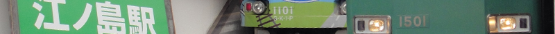
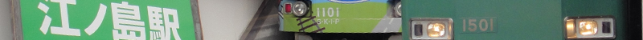

新入生のみなさん、ご入学おめでとうございます！

新入生のみなさん、ご入学おめでとうございます！新生活が始まったばかりで右も左もわからず大変でしょうが、そのような中でも鉄道研究会に興味を持って頂いたことをとても嬉しく思います。 さて、当会では新入生を歓迎して、様々なイベントを企画しています。 これらを通して、さらに鉄道に興味関心を抱き、また会員と親密になっていただければ幸いです。 ■新歓祭 ※終了しました 机出し：４月２日(木)～４日(土)・６日(月) 外濠校舎3階 教室展示：６日(月) 外濠校舎2階 S204教室 当会も新歓祭に参加します。 期間中に机出しを行う他、６日は教室で模型や写真などなど鉄道に関する展示を行います。 ぜひ立ち寄ってみてください。 新歓祭は終了しましたが、当会では随時会員を募集しております。ぜひ会室へお越しください。 ■鎌倉・江ノ島小旅行 ※終了しました →レポートはこちら！ 催行予定日：４月26日(日) 大船10時集合・大船18時解散予定 鎌倉・江ノ島パスを利用して観光を行います。このパスは700円でJR一部区間・江ノ電・湘南モノレールが一日乗り放題というスグレモノです。 大船駅から湘南モノレールで江ノ島へ向かい、沿線観光をしつつ江ノ電で鎌倉まで戻ってくる旅程です。 入会希望者にはほとんど費用の負担のないよう企画しておりますので、どうぞふるってご参加ください！！ 参加申し込みはこちらより申し込んでください。 解散後、希望者で食事会を行います。参加希望者は備考欄に食事会参加希望と書いてください。 ■大回り乗車 ※終了しました →レポートはこちら！ 催行予定日：５月23日(土)※日程が変更になりました 集合・解散未定 東京近郊区間内では、実際に乗車した経路に関わらず、最短経路の運賃で計算するという制度を利用して、初乗り133円（ICカード利用）で旅をします。 途中で改札外に出ることは出来ないので弁当持参、まさに「乗るだけ」の企画です。 ルートは未定。はたしてどこまで行けるでしょうか？ ■協議の結果、合宿は中止となりました。悪しからずご了承下さい。 
|